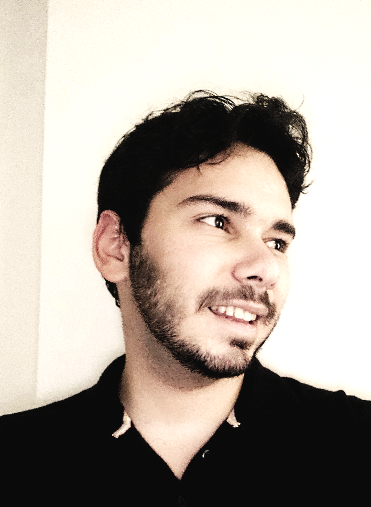

INFORMATIONS.
Octobre 2024 : Chargé de recherche CNRS, Institut Camille Jordan, Lyon.
Octobre 2022 - Septembre 2024 : Postdoc à Chalmers, Université de Göteborg, avec Robert BERMAN (page).
Avril 2022 - Septembre 2022 : Postdoc au DPMMS, Université de Cambridge, avec Ruadhaí DERVAN (page).
Septembre 2019 - Décembre 2021 : Doctorat en mathématiques à l'Institut Fourier, Grenoble, sous la supervision de Catriona MACLEAN (page) et Sébastien BOUCKSOM (page).
CONTACT.
Adresse actuelle : reboulet [ar] math.univ-lyon1.fr
Adresse pérenne : rebouletremimath [ar] gmail.com
Bureau 133, Institut Camille Jordan.
PUBLICATIONS & PRÉPUBLICATIONS.
10. Filtrations and asymptotic geometry of non-Archimedean norms on section rings.
arxiv.
9. A Hilbert--Mumford criterion for generalised Monge--Ampère equations.
arxiv.
8. Arcs, stability of pairs and the Mabuchi functional (avec Ruadhaí Dervan).
arxiv.
7. Infinite-dimensional flats in the space of positive metrics on an ample line bundle (avec David Witt Nyström).
International Mathematics Research Notices. arxiv.
6. Transcendental Okounkov bodies (avec Tamás Darvas, David Witt Nyström, Mingchen Xia, Kewei Zhang).
Accepté à Journal of Differential Geometry. arxiv.
5. The birational geometry of GIT quotients (avec Ruadhaí Dervan).
Bulletin of the London Mathematical Society. arxiv.
4. Ding stability and Kähler-Einstein metrics on manifolds with big anticanonical class (avec Ruadhaí Dervan).
Journal für die reine und angewandte Mathematik (Crelles Journal). arxiv.
3. The space of finite-energy metrics over a degeneration of complex manifolds.
Journal de l'École polytechnique. arxiv.
2. Plurisubharmonic geodesics in spaces of non-Archimedean metrics of finite energy.
Journal für die reine und angewandte Mathematik (Crelles Journal). arxiv.
1. The asymptotic Fubini-Study operator over general non-Archimedean fields.
Mathematische Zeitschrift. arxiv.
RECHERCHE.
Quelques mots-clés :
Géométrie non-archimédienne : espaces de Berkovich, pluripotentiel non-archimédien, espaces hybrides, espaces de Zariski-Riemann.
Géométrie algébrique : K-stabilité, géométrie birationnelle, positivité, corps d'Okounkov, théorie géométrique des invariants.
Géométrie complexe : pluripotentiel complexe, espaces de métriques kählériennes, géométrie de Mabuchi, métriques Kähler-Einstein et cscK.
EXPOSÉS.
Liste de mini-cours et d'exposés donnés en conférence. Une liste plus exhaustive se trouve ici. Les dates sont au format AAAA/MM/JJ.
2025/01/27: Arcs and the Hilbert-Mumford criterion for K-stability.
Conférence Geofloquant, Bruxelles, Belgique.
2024/07/22: Mini-cours sur la géométrie non-archimédienne.
Conférence Non-Archimedean, Tropical and Arakelov Geometry, Ratisbonne, Allemagne.
2024/07/01: Flats in the space of Kähler metrics.
Conférence BRIDGES meeting on special geometries and stability, Cargèse, Corse.
2024/06/10: Non-Archimedean methods in special degeneration problems.
Conférence Freixit (en l'honneur de Gérard Freixas), Varberg, Suède.
2024/02/12-13: Mini-cours sur la stabilité divisorielle.
Avec Yueqiao Wu, dans le cadre du programme INI New equivariant methods in algebraic and differential geometry, Cambridge, Angleterre.
2023/10/19: Transcendental Okounkov bodies.
Conférence GDR GAGC, Poitiers, France.
2023/04/22: The birational geometry of GIT quotients.
Conférence Around Complex Geometry, Chicago, Etats-Unis.
2023/04/13: The birational geometry of GIT quotients.
Conférence Komplexe Analysis, Oberwolfach, Allemagne.
2022/10/31: Ding stability for manifolds with big anticanonical class.
Conférence Convex and Complex en l'honneur de Bo Berndtsson, Cetraro, Italie.
2021/09/07: Non-Archimedean plurisubharmonic geodesics and complex limits.
Conférence K-stability and Kähler Geometry, Cambridge, Angleterre.
ENSEIGNEMENT.
2021-2022 : MAT307 Courbes paramétrées et équations différentielles (36h TD, L2 Physique-Mécanique), DLST, Université Grenoble-Alpes.
2019-2020 : MAT432 Sequences and series of functions (64h CM+TD, L2 Math-Info International), DLST, Université Grenoble-Alpes.
ADMINISTRATIF.
Novembre 2024 : organisation d'un workshop Kähler and non-Archimedean geometry in Lyon à l'Institut Camille Jordan.
Octobre 2024 - . : co-organisateur du séminaire Géométries à l'Institut Camille Jordan.
Août 2024 : organisation d'une conférence Gothenburg Complex Geometry à Chalmers.
Août 2022 : organisation de Cambridge Complex Geometry Afternoon.
Février 2021 - Mars 2022 : membre du conseil de laboratoire de l'Institut Fourier, collège des non-permanents.
2020 - 2021 : co-organisateur du séminaire des doctorants de l'Institut Fourier, Séminaire compréhensible.
DIVERS.
Diapositives de ma soutenance de thèse : lien.
Thèse de doctorat : pdf. Les deux premiers chapitres traitent des bases de la géométrie non-archimédienne, et ont été écrits dans le souci d'être compréhensibles pour un étudiant de niveau M1/M2 (intéressé).